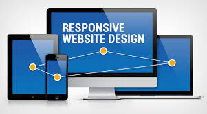
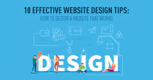

Building a responsive website is more important than
ever. With so many people accessing the web on their
mobile devices, it's essential that your website is
designed to work well on any screen size. In this
post, I'll share my tips for building a responsive
website that looks great on all devices.
-
Use a mobile-first approach:
Start by designing your website for mobile
devices and then work your way up to larger
screen sizes. This will ensure that your website
is optimized for smaller screens and provides a
good user experience on all devices
-
Use responsive design techniques:
Use CSS media queries and fluid grid systems to
ensure that your website layout and content
adjust to different screen sizes and
resolutions.
-
Optimize images and videos: Use
optimized images and videos that are optimized
for the web and load quickly on all devices.
Large media files can slow down your website and
negatively impact the user experience.
-
Test your website on different devices and browsers:
Make sure to test your website on different
devices and browsers to ensure that it looks and
functions correctly on all platforms.
-
Prioritize content: Make sure
that your website content is easily readable and
accessible on all devices. Prioritize the most
important content and make sure that it's easy
to find and navigate on smaller screens.

Designing a website can be overwhelming, especially
if you're new to the field. In this post, I'll share
my top 10 tips for creating a website that is both
functional and visually appealing. From choosing the
right color scheme to creating effective navigation,
these tips will help you design a website that your
users will love.
-
Keep it simple: A clean,
uncluttered design is easier to navigate and
more visually appealing.
-
Use a consistent layout:
Consistency in design helps to create a sense of
unity and familiarity throughout your website.
-
Use high-quality images and graphics:
Use high-quality, relevant images and graphics
to enhance the visual appeal of your website.
-
Make sure your website is mobile-friendly:
With more people accessing the internet on
mobile devices, it's important to design your
website with a mobile-first approach.
-
Use whitespace effectively:
Whitespace helps to create a visual hierarchy
and makes it easier for users to scan and
navigate your website.
-
Choose a color scheme that reflects your brand:
Color can evoke emotions and influence user
behavior, so it's important to choose a color
scheme that reflects your brand and appeals to
your target audience.
-
Make sure your website is easy to navigate:
Use clear, concise navigation menus and organize
your content logically to make it easy for users
to find what they're looking for.
-
Use typography effectively:
Typography can help to establish the tone and
personality of your website, so choose fonts
that are easy to read and reflect your brand.
-
Make sure your website loads quickly:
Slow loading times can drive users away, so
optimize your website for speed by minimizing
file sizes and reducing the number of HTTP
requests.
-
Test and iterate: Use analytics
and user feedback to continually test and
improve your website design, making changes and
adjustments based on what works best for your
users.
As more and more people turn to the internet to find
information and make purchases, having a website has
become essential for businesses of all sizes. Here
are a few reasons why every business needs a
website:
-
Establish your online presence:
A website allows you to establish your
business's online presence and make it easier
for potential customers to find you. It's an
important part of your overall marketing
strategy and helps you to reach a wider
audience.
-
Showcase your products and services:
Your website is a platform to showcase your
products and services. You can provide detailed
information, images, and videos to help
customers understand what you offer and why they
should choose your business.
-
Build credibility: A
well-designed website can help to build
credibility and trust with potential customers.
It demonstrates that you are a legitimate
business and that you take your online presence
seriously.
-
Increase sales: With an
e-commerce website, you can sell products or
services directly to customers online. This can
be a great way to increase sales and reach
customers who may not be able to visit your
physical location.
-
Improve customer service: A
website can provide a platform for customers to
contact your business and get answers to their
questions. You can also use your website to
provide customer support and resolve issues in a
timely manner.